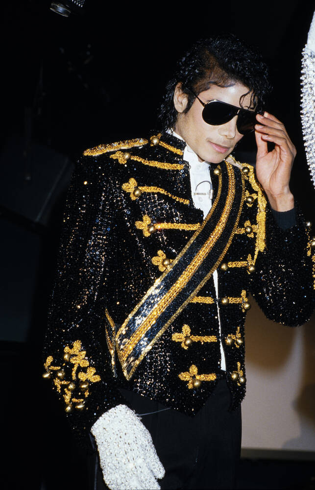

Michael Jackson

About Michael Jackson
1958-2009
Michael Jackson was an American singer, songwriter, and dancer.
He became one of the most famous and influential artists in the history of popular music.
He was known for his unique music, performances, and dance moves, including the moonwalk.
Important events
- 1958 Michael Jackson was born in Gary, Indiana.
- 1964 He joined the Jackson 5 with his brothers.
- 1979 He released his successful solo album "Off the Wall".
- 1982 He released "Thriller", which became a worldwide success.
- 1983 He performed the moonwalk during a television performance.
- 2009 Michael Jackson died at the age of 50 from acute propofol intoxicationi
Learn More
Most popukar songs